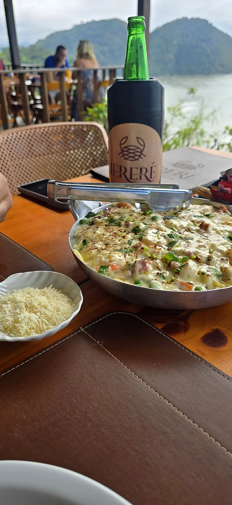
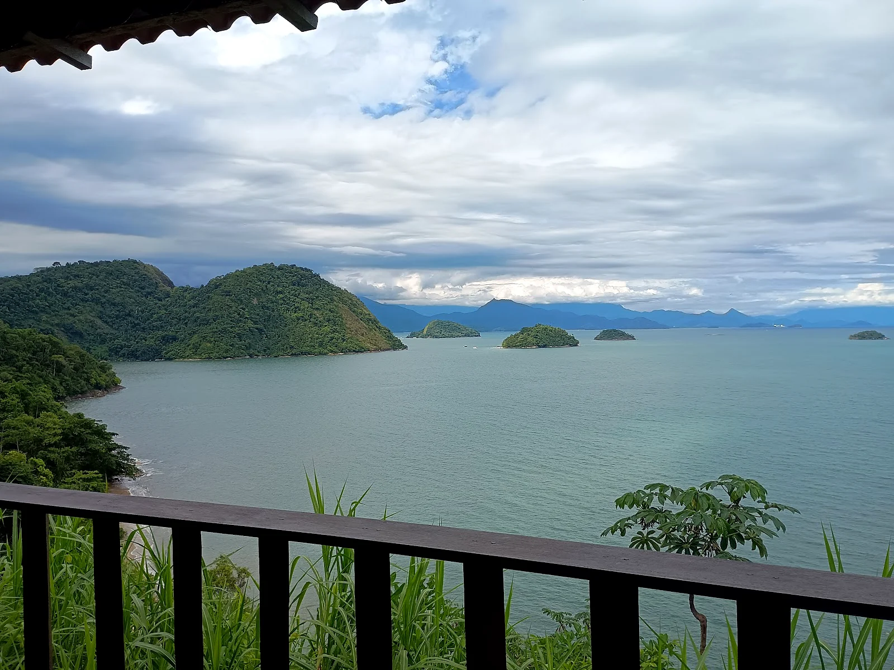
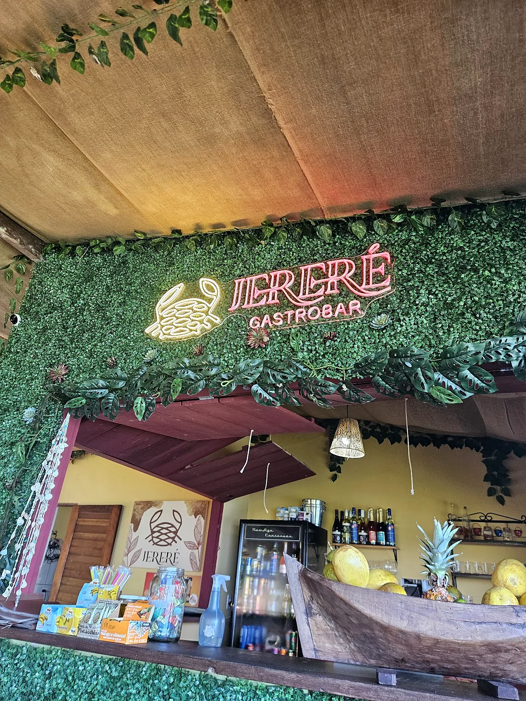
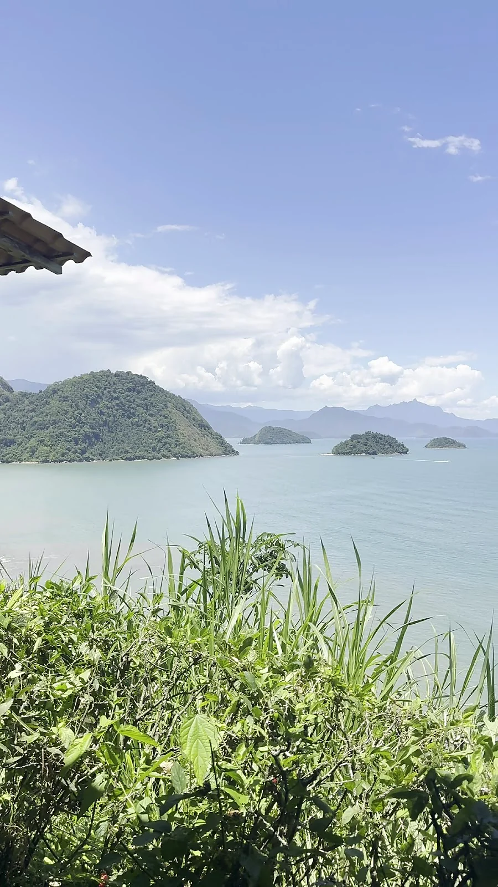
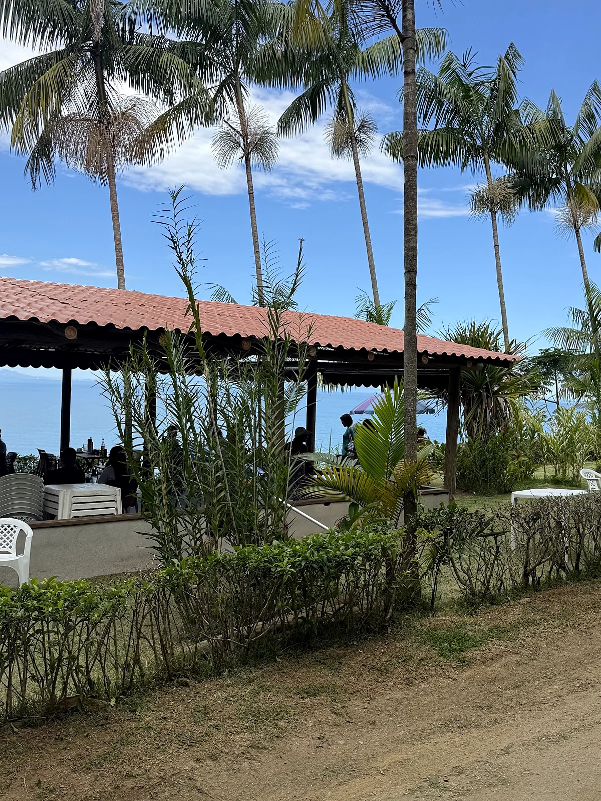
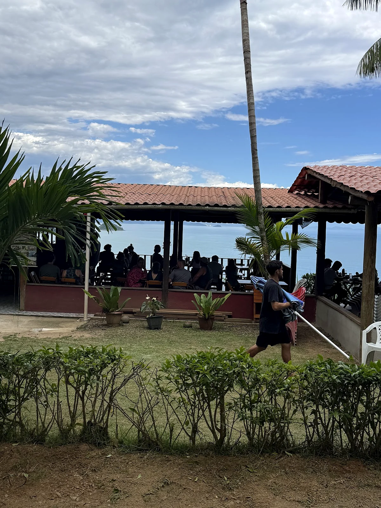

Refeições & Frutos do MarGratinados, Lula Recheada & Camarão
Pratos fumegantes para compartilhar na varanda e opções executivas de segunda a sexta.

No alto do km 564 da Rio-Santos, uma varanda aberta para as ilhas de Paraty com pratos generosos, massa feita na casa e chopp trincando.
Fotos reais servidas na varanda do Jereré Gastrobar: pastéis de massa caseira, petiscos na travessa, gratinados e bebidas geladas.
O nome Jereré celebra a rede artesanal da pesca caiçara — símbolo de fartura e respeito ao mar de Paraty.
Na altura da Praia Grande (Engenho Velho), fora do aperto do Centro Histórico e com acesso direto pela rodovia.
Salão arejado cercado por coqueiros, brisa constante e vista livre para as ilhas.
Pastel sequinho na chegada, prato principal no capricho e foto no painel verde com neon do Jereré.


No celular, arraste para o lado para ver os espaços reais do Jereré Gastrobar.


“Lugar com visual incrível, ótimo atendimento e comida no capricho. Voltaremos!”
“Ambiente gostoso, com vista maravilhosa e com deliciosos pratos e porções!”
“Pedimos a lula recheada e meu filho pediu o pastel de massa caseira.”
Escolha o que deseja abaixo e envie direto para o WhatsApp do Jereré Gastrobar.
Fica na Rodovia Rio-Santos (BR-101), km 564, na altura da Praia Grande / Engenho Velho em Paraty - RJ, com vista panorâmica para a baía e as ilhas.
Funcionamos todos os dias (segunda a domingo), das 10h às 17h.
Os pastéis com massa artesanal, a lula recheada, os pratos gratinados de camarão e frutos do mar, os bolinhos de peixe e os pratos executivos de segunda a sexta.
Atendemos por ordem de chegada e também recebemos reservas e grupos pelo WhatsApp (24) 99846-5586.